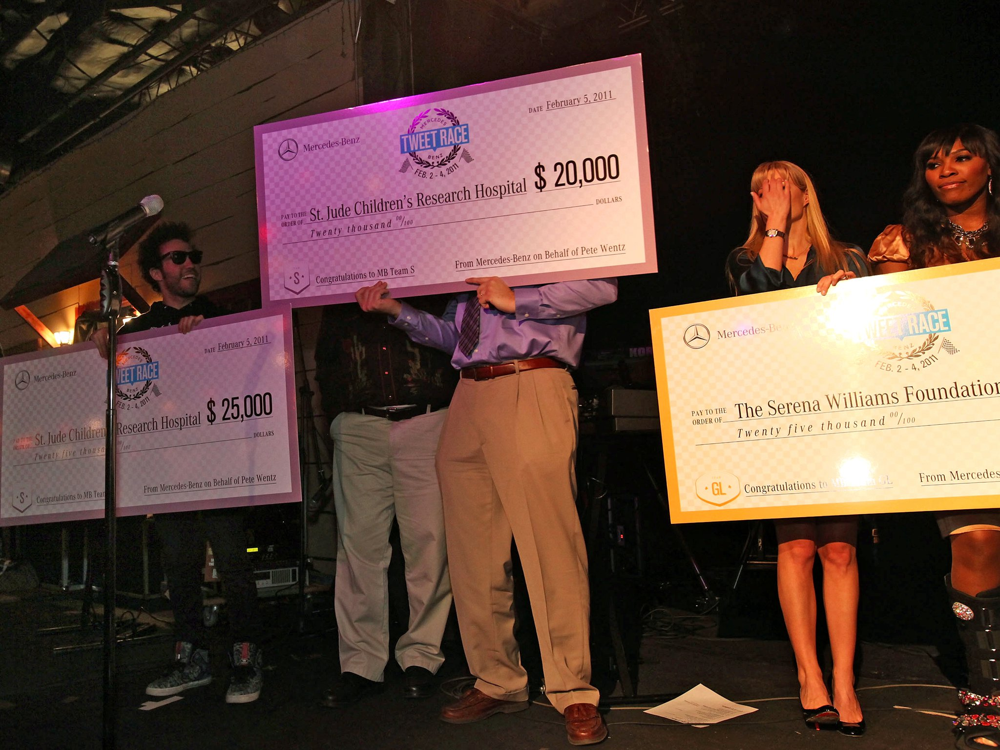
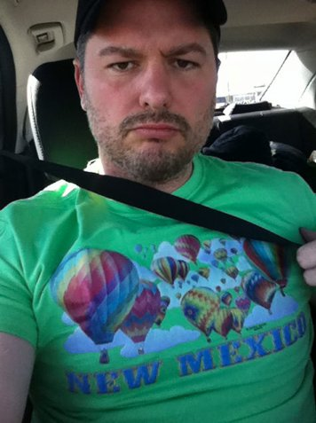
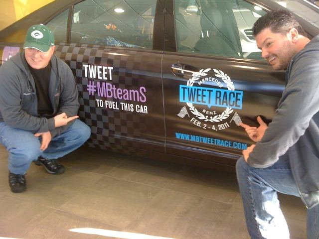
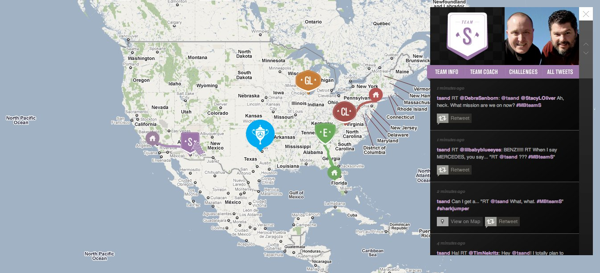
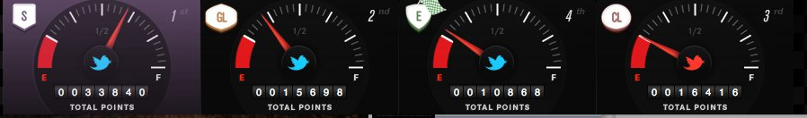
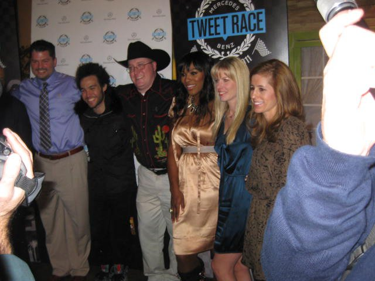
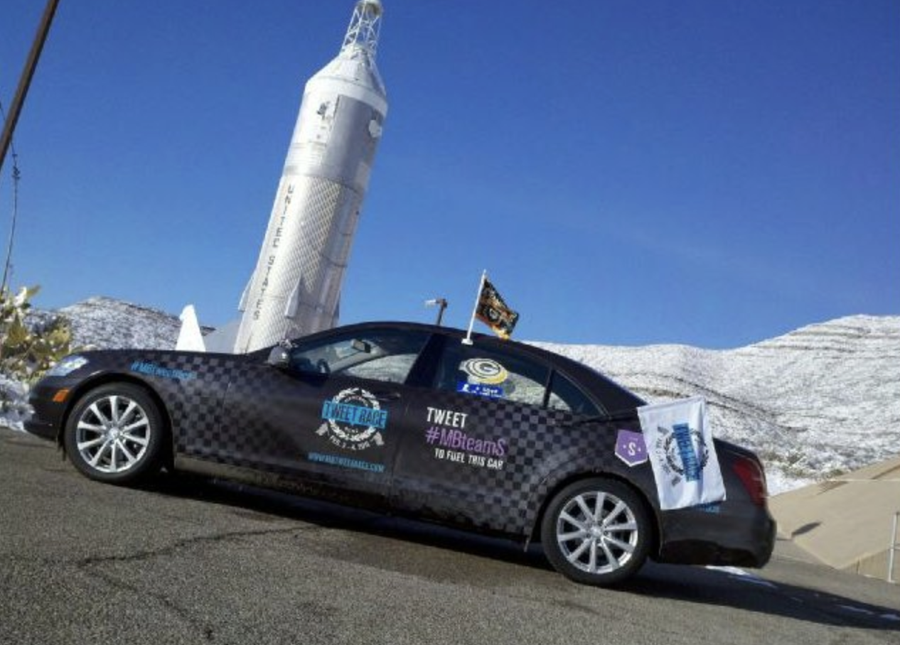

Campaign · Personal · February 2011
Tweet Race
Out of nearly 2,000 applicants, Todd Sanders and co-driver John Pedersen were selected to drive a Mercedes-Benz 1,500 miles from Los Angeles to Dallas — powered entirely by tweets — and won. They beat Serena Williams in the process and raised $50K for St. Jude.
The setup
Mercedes-Benz had never run a Super Bowl ad. They had zero Twitter followers. To mark their first foray into social media — and introduce the brand to a younger generation — they dreamed up the world's first Twitter-fueled race: four teams, four cities, 1,400 miles, powered only by tweets.
Out of 1,949 applicants who competed through the Mercedes-Benz Facebook page, four two-person driving teams were chosen based on social media prowess, personality, and "other intangibles." Todd Sanders — then Social Media Specialist at University of Wisconsin–Green Bay — and his co-driver John Pedersen, a friend he'd met on Twitter, were selected as Team S. Their vehicle: a 2011 Mercedes-Benz S400 Hybrid. Their starting point: Los Angeles. Their celebrity coach: Pete Wentz of Fall Out Boy.


How it worked
Every four tweets from supporters using #MBteamS moved the car one mile. The team with the most points at the finish line — earned through tweet volume plus a series of social media challenges along the route — won a pair of brand-new 2012 Mercedes-Benz C-Class Coupes. Their charity would also receive a donation based on their finish.
The nine challenges pushed the teams to generate creative content in real time: marshalling fans at specific locations, filming a 60-second commercial for the S-Class they were driving, acting out pages from their owner's manual, and staging their vehicle in a fashion shoot — all documented and shared live on Twitter.


The win
Team S led the race from start to finish. Over three days and 1,500 miles, they generated 43,000 tweets and accumulated 131,643 total points — nearly double their nearest competitor. They crossed the finish line in Dallas in first place, beating out three other teams including the team coached by 13-time Grand Slam champion Serena Williams.


The prize: two 2012 Mercedes-Benz C-Class Coupes. The cause: $50,000 for St. Jude Children's Research Hospital — $45,000 donated by Mercedes-Benz and an additional $5,000 raised directly by Team S's supporters through the St. Jude fundraising page.
Todd Sanders and John Pedersen, hidden behind the $25,000 check as the crowd erupted. Serena Williams is on the right.
Final standings
Charity raised
Team S (1st place)
Team CL (2nd)
Team GL (3rd)
Campaign impact